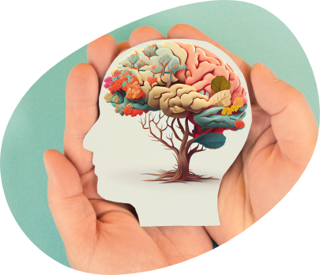

Get In Touch
Have questions about Master of Science (M.Sc.) in Psychology admissions?
Share a few details and our admissions counsellors will walk you through eligibility, fees, scholarships and the application timeline — no obligation.
- Fast Response — a counsellor calls back within 24 hours.
- One-on-One Guidance — personalised help with eligibility and documentation.
- No Obligation — ask questions before you decide to apply.
Fill this in and we'll reach out shortly.
Overview
Master of Science (M.Sc.) in Psychology
The M.Sc. Psychology program provides an advanced understanding of psychological principles and research methods, preparing students for professional practice and academic research. This program is ideal for students who wish to deepen their expertise in psychology or pursue a specialisation in clinical, forensic, Industrial, and counselling psychology.
Specialisations offered are Subject to subscription
Why Psychology @ PES University?
PES University offers a meticulously designed M.Sc. Psychology program that integrates both traditional and modern psychological theories and practices. This balanced approach ensures students are well-versed in the fundamental aspects of psychology while also staying updated with the latest trends and research in the field.
A distinctive feature of the M.Sc. Psychology program is the inclusion of hospital-based training, where students are exposed to real-world clinical settings. This not only allows them to apply their theoretical knowledge but also helps them acclimatize to working with patients from diverse backgrounds.



Eligibility
Atleast 50% in Bachelor’s degree from any recognized University, with Psychology as one of the compulsory subject.
Why PES University
Key Differentiators of M.Sc. Psychology @ PESU
Semester Dedicated to Internships and Projects
The fourth semester is designed exclusively for internships and project work, giving students ample opportunities for real-world exposure and practical experience. In addition, students engage in each summer internship to further build skills.
Skill Development Focus
The program emphasizes employability by offering the “Mind Talks” skill development program. This unique initiative ensures students acquire essential skills needed for various psychology careers through self-reflective exercises and interactions aimed at cultivating a balanced understanding of human behavior.
Human Resource Professionals
Students develop an understanding of workplace behaviour and learn to apply psychological principles to areas such as employee motivation, selection and assessment, performance, leadership, organizational culture, and employee well-being.
Real-time Hospital Experience
As part of the curriculum, students gain hands-on exposure to hospital settings, giving them valuable insight into clinical practice, patient interactions, and multidisciplinary healthcare. This immersive experience helps bridge classroom learning with the realities of professional psychological practice.
Hands-On Practical Learning
The program encourages students to gain practical experience in key psychological subfields, fostering an application-based understanding of concepts.
State-of-the-Art Laboratory Facilities
Students have access to a fully equipped lab with psychometric tools, models, and other essential resources to enhance their learning.
Personalized Guidance and Mentorship
Faculty members offer personalized counselling and academic guidance, ensuring each student is supported in their academic and professional journey.
About the Programme
Program PESU X factors
Case Studies: Based on real cases of psychological concepts and disorders (Eg. Employee dynamics/conflict resolution)
Exposure: Certificate courses on Pranic healing, Reiki, Yoga, as well as hands-on skill development experiences.
Case Report Writing: Provides Students with report writing skills for clinical, counselling and forensic assessment reports.
Research Papers: Encourages students to author impactful research papers, blending academic rigour with industry relevance (Eg. Mental disorders and crime)
Mentoring: 2 one-on-one mentoring per semester
Skill Based Certifications
- Art Therapy
- Career Counselling
- Gatekeepers Training
- Dance & Movement Therapy
- Hypnosis
Subject to Subscriptions of the students
Assessments
- Projective Tests
- Personality Tests
- Intelligence Tests
- Aptitude Tests
- Achievement Tests
About the Programme
Industry Connect
Institute of Psychology, offers a platform to connect and collaborate to an integral part of the learning experience. We collaborate with hospitals, mental health organizations, corporate sectors, and NGOs to provide students with real-world exposure. Through Internships, Expert Talks, and Industry-led Workshops, Psycathon, Studyathon, students gain practical insights and professional skills. This strong industry engagement ensures the graduates are career-ready and aligned with current industry needs.
Careers
Future Career Prospects
M.Sc. Psychology course is designed with a strong career focus, preparing students for diverse professional pathways. Students are equipped with both theoretical knowledge and practical skills needed for roles in clinical psychology, counseling, organizational behavior, mental health advocacy, research, and more. Specialized modules, internships, and hands-on training ensure that students build competencies aligned with industry demands.
Careers
Career Outcomes
The M.Sc. Psychology program at PES University prepares graduates for diverse career paths across various psychological fields by offering a strong foundation and specializations in Clinical, Forensic, Counselling, and Industrial Psychology. The program provides extensive training and practical experience, making graduates well-suited for careers in Business, Education, Law, Medicine, Social Work, and specialized areas within Psychology. Potential career outcomes include:
Working in mental health clinics, hospitals, or private practice, diagnosing and treating mental, emotional, and behavioral disorders.
Collaborating with law enforcement, legal professionals, and correctional facilities to assess, counsel, and provide expert testimony on psychological issues in legal cases.
Assisting individuals, couples, and families in managing life challenges, mental health, and emotional well-being through various therapeutic techniques.
Supporting businesses with workforce development, employee satisfaction, and productivity, applying psychological principles to organizational settings.
Providing guidance on career development or relationship issues, often in private practice, educational institutions, or social service agencies.
Curriculum
Curriculum Structure, Semester Structure
- Theories of Personality
- Empirical Research and Writing Techniques
- Biopsychology and Behavioral Genetics
- Integrative and Transpersonal Psychology
- AI Applications in Psychology
- Assessments in Behavioral Sciences (Lab)
- Common Papers
- Contemporary Applications to Social Psychology
- Human Growth & Development
- Cognitive Neuroscience
- Internship I
- Dissertation
- Specialization Papers
- Psychopathology (Cl)
- Psychological Assessments & Diagnostics (Lab) (Cl)
- Foundations of Counselling & Psychotherapy (Co)
- Counselling Skills (Lab) (Co)
- Foundations of Forensic Psychology (Fr)
- Forensic Assessment and Interview (Lab) (Fr)
- Applied Workplace Psychology (I/O)
- Group Dynamics (Lab) (I/O)
- Common Papers
- Advanced Practice in Community Mental Health Systems
- Positive Psychology
- Internship
- Capstone Research Project I
- Specialization Papers
- Behavioral Medicine in Clinical Practice (Cl)
- Psychotherapeutic interventions in clinical Practice (Cl)
- Clinical Assessment and Intervention Skills (Lab) (Cl)
- Counselling Across Lifespan (Co)
- Counselling Interventions for Special Population (Co)
- Counselling in Diverse Context (Lab) (Co)
- Psychology of Violence and Serial Homicide (Fr)
- Ethics and Legalities (Fr)
- Applied Techniques in Forensic Psychological Assessment (Lab) (Fr)
- Applied Cross-Cultural Psychology for Managers (I/O)
- Consumer Psychology and Decision Making (I/O)
- Workplace Innovation and Employee Engagement (Lab) (I/O)
- Applied Psychology in Marketing and Media
- Internship
- Capstone Research Project II
Financial Support
Merit scholarships, awarded on performance
Over ₹140 crores in merit scholarships have been given to PES University students since 2014.
Merit Scholarships
Awarded on CGPA / SGPAProf. MRD Scholarships
Merit Certificate + 50% Tuition Fee Refund for Top 5% of the Students based on their CGPA.
Prof. CNR Rao Scholarships
Merit Certificate + 40% Tuition Fee Refund for the next 20% of the Students based on their SGPA.
Distinction Awards
Merit Certificate for Students securing 7.75+ SGPA.
PES Loyalty Program
Awarded on family / institutional ties, every year of studyPES Employees
Children of full-time staff, 5+ years employment.
PES Institution Students
Graduates of any PES institution or sister concern.
Siblings of Students
Siblings of currently enrolled PES students.
Alumni Family
Siblings and children of PES University alumni.
University Highlights
Recognition beyond the programme
The accreditations and rankings behind PES University as a whole.
University in Karnataka
Among new universities under 5 years, ranked by KSURF.
NAAC Accredited
PES University holds NAAC's top-grade accreditation nationally.
B-School in Karnataka
Times of India B-School Rankings, 2021.
Most Preferred B-School
Second only to IIM Bangalore among B-School aspirants, per Times of India.